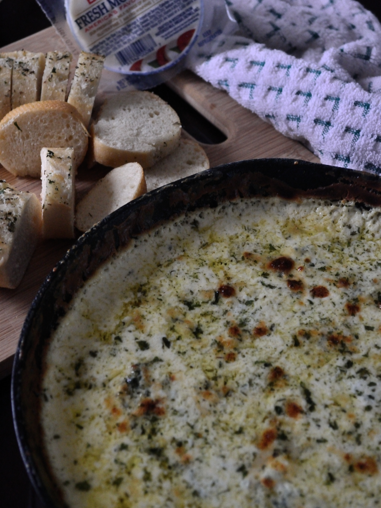

Spinach and Artichoke Dip

Description:
Spinach dip... the one item on the menu that mostly everybody loves especially me!
I use frozen spinach cuz I'm lazy. But you can always blanch your own fresh spinach
with ya bad self. I also like using marinaded artichokes instead of the ones in a can.
And last but not certainly not least, USE FRESH CHEESE!!! If at all possible, grate
and/or shred the cheese yourself. Might seem like a lot of work but Trust me... it makes
all the difference.
Ingredients:
- 10 oz frozen spinach thawed and drained well
- 4 oz artichoke hearts roughly chopped
- 1 T minced garlic
- 2 T butter
- 10 oz heavy whipping cream
- 8 oz cream cheese
- 1/4 cup chicken broth
- 1 cup Mozzarella cheese shredded
- 1 cup grated Parmigiano Reggiano
- 1 tsp onion powder
- 1 tsp garlic powder optional
- salt and pepper to taste
Steps:
- Melt butter
- Add artichokes and saute for 2 mins
- Add heavy whipping cream
- Bring to a simmer
- Stir in cream cheese and broth
- When cream cheese melts add 1/2 each of mozzarella and parmigiano reggiano
- Stir in spinach
- Add in powders and season to taste
- Transfer to oven safe dish
- Top with remaining cheeses
- Bake for 10-15 mins or until cheese is melted bubbly
- Allow to cool for at least 10 mins
- Enjoy with chips or toasted baguettes
- ENJOY!